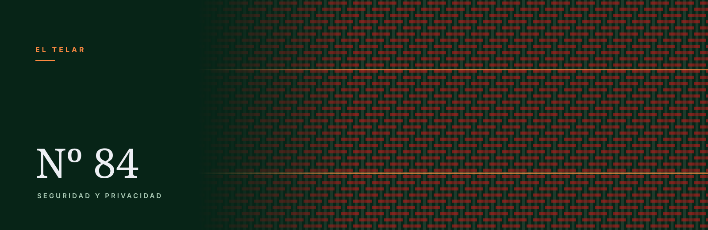

E n febrero de 2025 el Tribunal de Justicia de la Unión Europea resolvió el caso de una mujer de Viena a la que una operadora de telefonía le negó un contrato de móvil. No se lo negó una persona: se lo negó una evaluación automática de solvencia hecha por una empresa con la que ella no había tratado nunca. Cuando preguntó por qué, le dieron el resultado. El motivo, no.
Esa distinción —te dan el resultado, no el motivo— es el centro de esta guía. Cada vez más decisiones que te afectan las toma, o las prepara, un sistema automático: si te dan un préstamo, si pasas el primer filtro de una oferta de empleo, si te aprueban un alquiler, si una plataforma te suspende la cuenta. La buena noticia es que desde 2018 tienes derechos concretos sobre eso, y no hace falta un abogado para empezar a ejercerlos. La menos buena es que el derecho que casi todo el mundo cree que le ampara —el del reglamento europeo de IA— todavía no se aplica, y el que sí funciona hoy está en otra norma, más vieja y menos comentada.
Qué cuenta como «decisión automatizada» y qué no
La norma que te sirve es el artículo 22 del Reglamento General de Protección de Datos. Dice, en resumen, que tienes derecho a no ser objeto de una decisión basada únicamente en un tratamiento automatizado, incluida la elaboración de perfiles, que te produzca efectos jurídicos o te afecte significativamente de modo similar. Las dos condiciones en negrita son las que deciden si puedes reclamar o no, y conviene entenderlas por separado porque casi todas las discusiones reales se juegan ahí.
«Únicamente» automatizado
Si no interviene ninguna persona, está claro. El problema es el caso intermedio, que es el habitual: hay una persona en el proceso, pero se limita a dar el visto bueno a lo que dice el sistema. La Agencia Española de Protección de Datos ha sostenido, en una advertencia sobre algoritmos de recursos humanos, que la presencia formal de un operador humano no basta si esa persona no tiene tiempo material, competencia, acceso al contexto o autoridad real para discrepar de la calificación automática. Es un criterio de la autoridad, no una sentencia, pero es el criterio con el que te van a medir la reclamación: lo que importa es cómo funciona el proceso de verdad, no que figure una firma al final.
«Efectos jurídicos o similares»
Aquí entra denegar un crédito, rechazar una solicitud de empleo, resolver un contrato, denegar una ayuda o una prestación, cerrar o suspender una cuenta de la que dependen tus ingresos. No entra, en principio, que un sistema te ordene las publicaciones de una red social o te recomiende una película. Entre ambos extremos hay un terreno discutible —un precio personalizado, una prima de seguro— donde la respuesta depende del caso concreto y de cuánto te cambia la vida.
Que una IA se haya equivocado describiendo algo no es, por sí solo, una decisión automatizada sobre ti. Si lo que te preocupa es que un modelo invente datos, el problema es otro y se trata de otra forma: lo cubrimos en la guía sobre alucinaciones. Y si lo que quieres es limitar qué sabe de ti un asistente antes de que nadie decida nada, el sitio para empezar es cómo proteger tus datos al conectar la IA.
El reglamento europeo de IA todavía no es tu herramienta
Mucha gente da por hecho que el AI Act ya le da derecho a que le expliquen una decisión automatizada. Conviene ser exacto, porque esto cambió en julio de 2026. El Reglamento (UE) 2024/1689 contiene un artículo 86 titulado precisamente «derecho a la explicación de decisiones tomadas individualmente», y se aplica a las decisiones que un responsable toma a partir de un sistema de alto riesgo del Anexo III. Pero el llamado «ómnibus digital», el Reglamento (UE) 2026/1744, en vigor desde el 27 de julio de 2026, aplazó las obligaciones de alto riesgo del Anexo III al 2 de diciembre de 2027 y las de los productos regulados del Anexo I al 2 de agosto de 2028.
Sobre si el artículo 86 se aplica ya o no, los comentaristas no se ponen de acuerdo: está en un capítulo que los aplazamientos no mencionan, pero muerde sobre decisiones basadas en sistemas cuyas obligaciones propias aún no rigen. Nosotros no vamos a resolver aquí una duda que la doctrina tiene abierta. Y para lo que tú necesitas da bastante igual, por una razón que sí está en el texto: el propio artículo 86 dice que se aplica solo en la medida en que ese derecho no esté ya previsto en otra norma de la Unión. Y sí lo está. Lo lleva estando desde 2018.
Traducción práctica: la herramienta de hoy es el RGPD, no el AI Act. Lo que sí se aplica ya del reglamento de IA son las normas de transparencia del artículo 50 —que te avisen de que hablas con una máquina, que se etiquete el contenido sintético—, desde el 2 de agosto de 2026. El calendario completo, con lo que se aplazó y lo que no, está en nuestra guía del AI Act.
Las tres cosas que puedes exigir (y una cuarta que casi nadie pide)
El artículo 22 no se queda en prohibir. En los casos en que la decisión automática sí está permitida —porque es necesaria para celebrar o ejecutar un contrato, porque la autoriza una ley, o porque diste tu consentimiento explícito—, el responsable está obligado a darte garantías. Como mínimo, estas tres:
- Intervención humana. Que una persona con capacidad real de cambiar el resultado revise tu caso.
- Expresar tu punto de vista. Que puedas aportar contexto que el sistema no tenía: un ingreso que no consta, un dato desactualizado, una circunstancia que explica lo que el modelo leyó como señal de riesgo.
- Impugnar la decisión. Que exista una vía para discutirla, no solo para que te la repitan.
Las directrices sobre decisiones automatizadas del antiguo Grupo de Trabajo del Artículo 29 —el documento que las autoridades europeas siguen usando como referencia— precisan algo que suele confundirse: estas garantías operan justamente en los supuestos en que la decisión automática está permitida, porque fuera de ellos el tratamiento directamente no debería estar ocurriendo.
La cuarta: que te expliquen la lógica
Esta no está en el artículo 22 sino en el 15.1.h), y es la que más rinde. Te da derecho a saber que existe una decisión automatizada y a obtener información significativa sobre la lógica aplicada, así como la importancia y las consecuencias previstas de ese tratamiento. Durante años las empresas respondieron a esto con un párrafo genérico. Dos sentencias lo han cambiado.
Dos sentencias que convirtieron el derecho en algo utilizable
SCHUFA (asunto C-634/21, 7 de diciembre de 2023): la puntuación ya es la decisión
Fue la primera vez que el Tribunal de Justicia interpretó el artículo 22. Una agencia alemana de información crediticia calculaba de forma automática un valor de probabilidad de pago, y los bancos decidían con él. La agencia sostenía que ella no decidía nada: solo calculaba. El Tribunal resolvió que, cuando un tercero se apoya de manera determinante en ese valor para conceder o denegar el crédito, elaborar la puntuación es ya una decisión individual automatizada del artículo 22.1.
Por qué te importa: significa que no estás obligado a aceptar el «es que el sistema lo dice» de la empresa que te atiende. Si detrás hay un fichero de solvencia o un proveedor de scoring, esa empresa también responde ante ti.
Dun & Bradstreet (asunto C-203/22, 27 de febrero de 2025): qué es una explicación de verdad
Es el caso de Viena con el que abre esta guía. El Tribunal declaró que «información significativa sobre la lógica aplicada» quiere decir explicar el procedimiento y los principios efectivamente aplicados a tus datos personales, de forma concisa e inteligible, de modo que puedas entender qué datos tuyos se usaron y cómo. Y precisó dos cosas muy útiles:
- Entregarte la fórmula matemática, o una descripción paso a paso del algoritmo, no cumple: no es una explicación concisa ni inteligible. Lo que debe explicarse es qué pesó en tu caso.
- El secreto comercial no es un no automático. Si la empresa lo invoca, no se acaba ahí: corresponde a la autoridad de control o al tribunal ponderar los intereses en juego, y el procedimiento puede verse a puerta cerrada para proteger el secreto.
El Tribunal apuntó además que una forma válida de cumplir es indicarte en qué medida variaría el resultado si cambiara algún dato tuyo. Si al reclamar pides exactamente eso —qué dato concreto habría que mover, y cuánto, para que la respuesta fuera otra— estás pidiendo algo que una sentencia del TJUE respalda.
Cómo reclamar, paso a paso
- Identifica al responsable y a su delegado de protección de datos. El responsable es la entidad que decidió, no necesariamente la que te atendió en el mostrador. Si hay un fichero de solvencia de por medio, tras la sentencia SCHUFA también puedes dirigirte a él. La AEPD mantiene un listado de contacto de los delegados que le han sido comunicados.
- Presenta la solicitud por escrito. La AEPD publica un formulario oficial para este derecho exacto, titulado «ejercicio del derecho a no ser objeto de decisiones individuales automatizadas». El propio formulario recomienda acompañarlo de un escrito que detalle el caso, y conviene hacerlo: es donde pides la intervención humana, expones tu punto de vista e impugnas la decisión, y donde añades la petición del artículo 15.1.h) sobre la lógica aplicada.
- Cuenta un mes. El artículo 12.3 del RGPD da al responsable un mes desde la recepción para informarte de lo que ha hecho. Puede prorrogarlo dos meses más si el caso es complejo, pero tiene que avisártelo dentro del primer mes y explicarte el motivo. El formulario de la AEPD recoge ese mismo plazo de un mes.
- Si no contestan, o la respuesta no resuelve, reclama ante la AEPD. Se presenta en su sede electrónica, es gratuito y no necesitas abogado. Aquí es donde casi todo el mundo se queda a medias, por el motivo del apartado siguiente.
- La vía judicial sigue abierta. La reclamación administrativa no te cierra la puerta a los tribunales, y el TJUE recordó en el caso de Viena que es precisamente la autoridad o el juez quien pondera el secreto comercial si la empresa lo alega.
La prueba que casi nadie guarda —y sin la que no hay reclamación
Esto no es un consejo nuestro, está escrito en las instrucciones del propio formulario de la AEPD, y es la causa más tonta de que una reclamación buena no llegue a tramitarse. Para que la Agencia pueda tramitarla hacen falta dos cosas: que el responsable no haya respondido en el plazo de un mes, y que aportes alguno de estos documentos:
- la negativa expresa del responsable;
- una copia de tu solicitud sellada por el responsable;
- una copia sellada por la oficina de correos, o el resguardo del envío certificado;
- cualquier otro medio de prueba del que se deduzca que recibió tu solicitud.
De aquí sale la regla práctica que resume media guía: envía la solicitud por un medio que deje rastro. Un correo electrónico al delegado de protección de datos del que guardes copia, el registro electrónico de la entidad, o correo certificado. Un formulario web del que no te quede acuse, o una llamada de teléfono, te dejan sin el documento que la AEPD te va a pedir después. Guarda también la fecha: el mes cuenta desde la recepción.
Qué no vas a conseguir
Una guía honesta sobre esto tiene que decir dónde está el techo, porque la distancia entre el derecho en el papel y lo que obtienes en la práctica es real:
- El código, no. El TJUE fue explícito: la explicación es del procedimiento y de los principios aplicados a tus datos, no del algoritmo. Y pedir la fórmula tampoco te serviría de nada.
- No necesariamente otra respuesta. Tienes derecho a que una persona lo revise, a ser oído y a impugnar. No a que el resultado cambie. Puede revisarse bien y seguir siendo un no.
- Las excepciones son amplias. Si la decisión es necesaria para celebrar o ejecutar un contrato, o la autoriza una ley, la decisión automática es lícita: lo que te queda son las garantías, no la prohibición.
- El umbral se discute. Que un efecto sea «significativo de modo similar» a uno jurídico no siempre está claro, y es el punto por donde más se defienden las empresas.
- Los plazos son largos. Un mes el responsable, más lo que tarde la AEPD. Si lo que necesitas es el crédito o el piso ahora, esta vía no te lo resuelve a tiempo; sirve para corregir el dato, dejar constancia y que no se repita.
En España: quién vigila qué
Dos agencias, y no hacen lo mismo. La AEPD es la que te atiende cuando el problema es un tratamiento de tus datos personales, y es la vía de todo lo anterior. La AESIA, Agencia Española de Supervisión de la Inteligencia Artificial, creada por el Real Decreto 729/2023 y con sede en A Coruña, está pensada para vigilar el cumplimiento del reglamento de IA, que es otra cosa: mira el sistema y a quien lo pone en el mercado, no tu expediente.
El reparto definitivo de competencias y el régimen de sanciones están en el Proyecto de Ley Orgánica 121/000096, aprobado por el Consejo de Ministros el 26 de mayo de 2026 y publicado en el boletín de las Cortes el 12 de junio de 2026. A fecha de esta guía no hemos podido confirmar que se haya aprobado definitivamente ni publicado en el BOE, así que si lo necesitas para algo formal, compruébalo en el Congreso o en el BOE antes de darlo por hecho. Mientras tanto, para una decisión que te afecta a ti, la puerta sigue siendo la AEPD.
Lista de comprobación
- ¿La decisión la tomó el sistema solo, o hubo una persona con poder real de cambiarla?
- ¿Te produce un efecto jurídico o algo equiparable? Escríbelo en una frase concreta: qué has perdido.
- ¿Sabes quién es el responsable, y si detrás hay un proveedor de puntuación?
- ¿Has pedido las cuatro cosas: intervención humana, exponer tu versión, impugnar, y la lógica aplicada a tus datos?
- ¿Has pedido expresamente qué dato tendría que cambiar, y cuánto, para que el resultado fuera otro?
- ¿Lo enviaste por un medio que deja prueba, y guardaste la fecha?
- ¿Ha pasado el mes? ¿Te avisaron de una prórroga motivada dentro de ese mes?
Si la decisión que te afecta es un filtro automático de currículums, la guía hermana de esta es cómo usar la IA para el currículum y las entrevistas, que entra en el mismo artículo 22 desde el lado del candidato. Y si lo que quieres es entender qué guardan de ti los asistentes antes de que nadie decida nada, lo cubrimos al detalle en la guía de privacidad de los chats.
Fuentes
- Reglamento (UE) 2016/679 (RGPD), artículos 12.3, 15.1.h) y 22 (fuente primaria).
- Formulario de la AEPD, «ejercicio del derecho a no ser objeto de decisiones individuales automatizadas», de donde salen el plazo de un mes y la lista de medios de prueba que exige la Agencia (fuente primaria).
- Directrices sobre decisiones individuales automatizadas y elaboración de perfiles del Grupo de Trabajo del Artículo 29 (WP251 rev.01), en la versión en español que publica la AEPD.
- TJUE, asunto C-634/21, sentencia de 7 de diciembre de 2023 (SCHUFA): la puntuación crediticia como decisión automatizada.
- TJUE, asunto C-203/22, sentencia de 27 de febrero de 2025 (Dun & Bradstreet Austria): alcance de la «información significativa sobre la lógica aplicada» y tratamiento del secreto comercial.
- Reglamento (UE) 2024/1689 (AI Act) y Reglamento (UE) 2026/1744, el «ómnibus digital» que aplaza el alto riesgo del Anexo III al 2 de diciembre de 2027 (fuentes primarias).
- Proyecto de Ley Orgánica 121/000096 para el buen uso y la gobernanza de la inteligencia artificial, en tramitación parlamentaria.
Las sentencias se citan por su contenido tal como lo recogen el propio Tribunal y los resúmenes de los despachos que las analizaron; si vas a usarlas en un escrito, léelas en el texto oficial. No damos cifras de duración media de los procedimientos de la AEPD porque no hemos encontrado un dato oficial y actualizado que podamos citar. El criterio de la AEPD sobre la supervisión humana en algoritmos de recursos humanos procede de una advertencia de la Agencia recogida por la prensa jurídica, no de una resolución sancionadora.
Esta guía es información general sobre una norma de aplicación general. No es asesoramiento jurídico ni sustituye el consejo de un profesional sobre tu caso concreto.